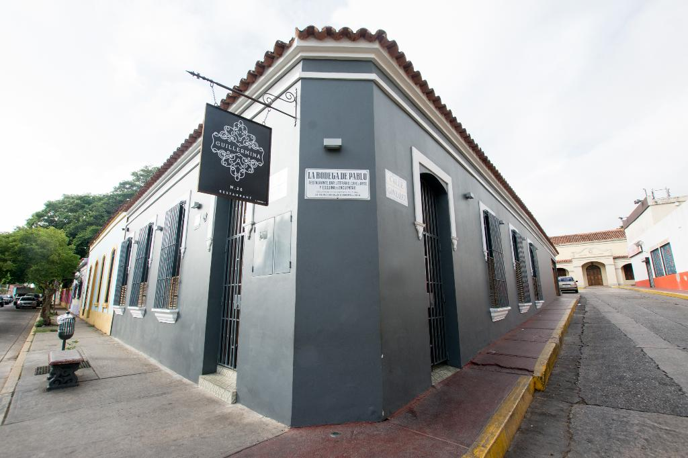

BusquedaAvanzada
Registrarse
Login
Logout
Guillermina Restaurant

Descripción:
Guillermina ofrece una experiencia reconfortante a todos sus visitantes y comensales, con una oferta gastronómica que rescata los sabores asuntinos deliciosos tentempiés y buitrías, fritos del mar, arroces, pastas y una deliciosa y amplia carta de bebidas, es un buen lugar para disfrutar Comida local, ir con Grupos grandes, agradable para Familias con niños y Ocasiones especiales para celebrar.
Dirección:
Calle Union, Numero 26 | Casco Histórico de La Asunción, Estado Nueva Esparta, La Asunción, Isla de Margarita 6311, Venezuela
Teléfono:
+58 295-2423040
Servicios:
Reservaciones, Asientos al aire libre, Asiento, Meseros, Sillitas altas disponibles, Acceso para silla de ruedas, Sirve alcohol, Bar completo, Acepta Mastercard, Acepta Visa, Wi-Fi gratis, Acepta tarjetas de crédito
Redes Sociales:
Horario:
domingo
9:00 a. m. - 10:00 p. m.
lunes
12:00 p. m. - 10:00 p. m.
martes
12:00 p. m. - 10:00 p. m.
miércoles
12:00 p. m. - 10:00 p. m.
jueves
12:00 p. m. - 10:00 p. m.
viernes
12:00 p. m. - 11:00 p. m.
sábado
12:00 p. m. - 11:00 p. m.